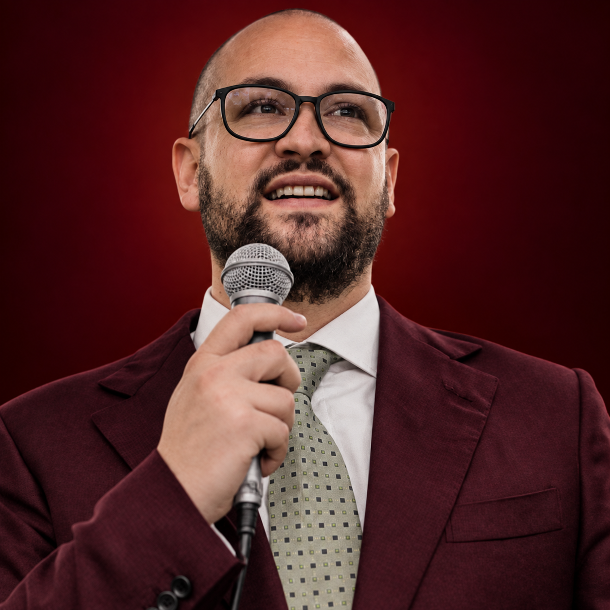
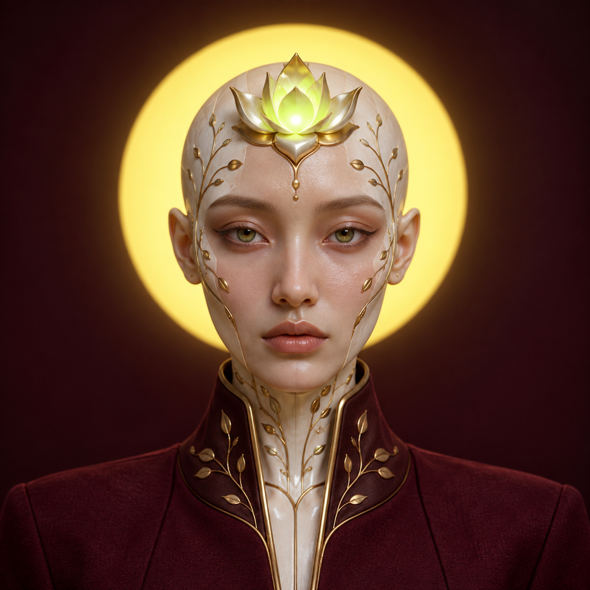
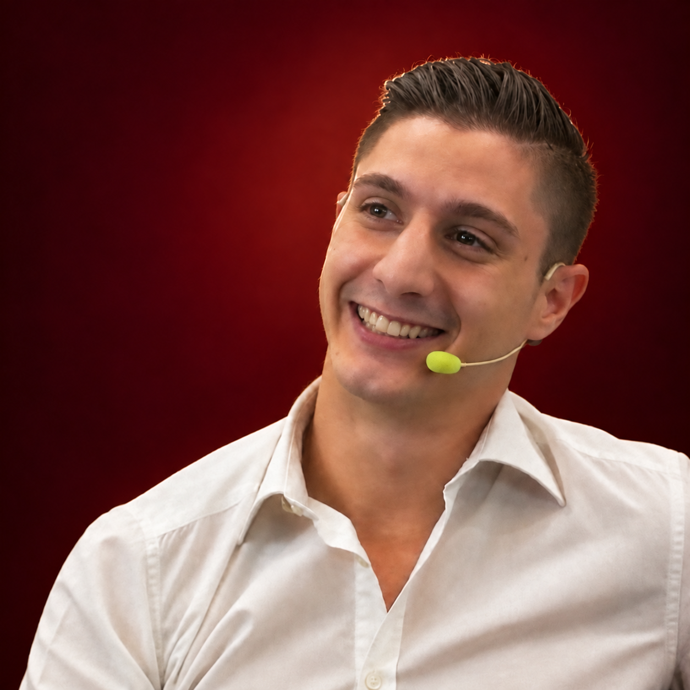
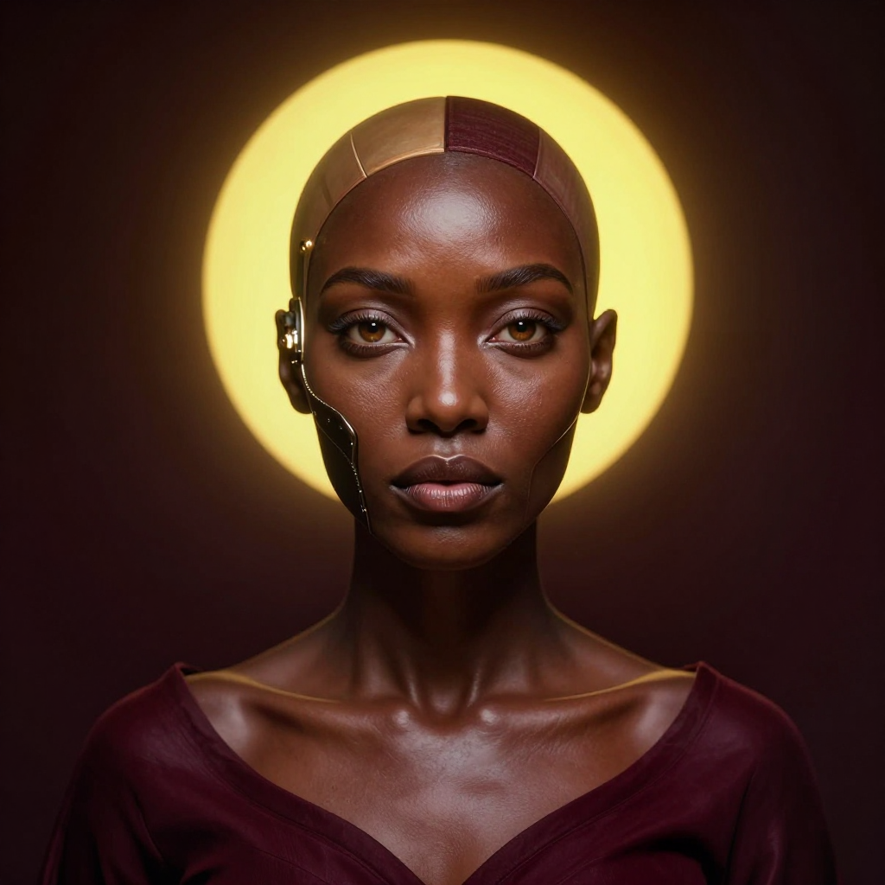
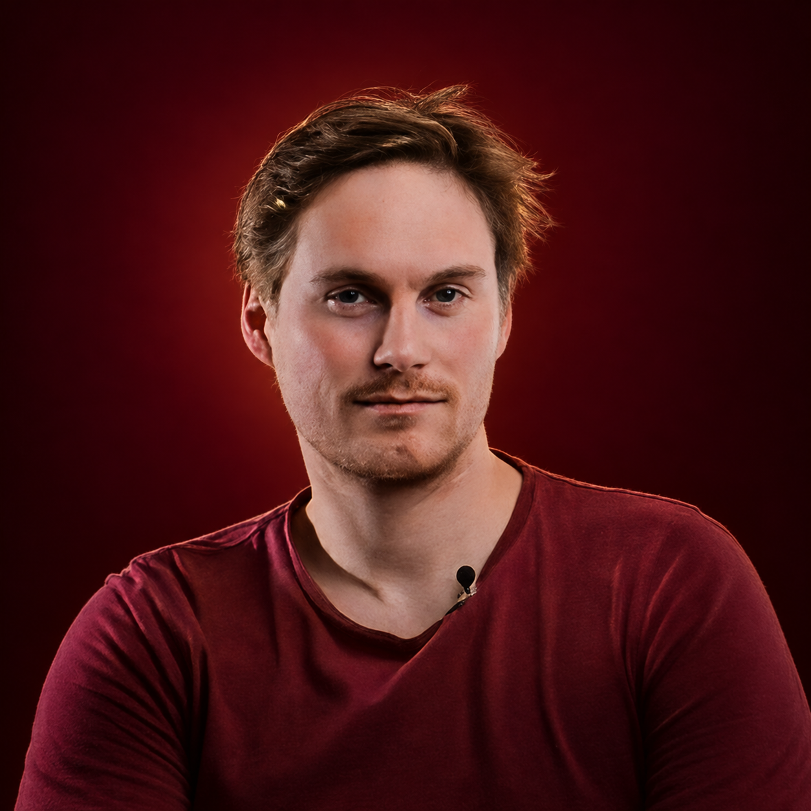
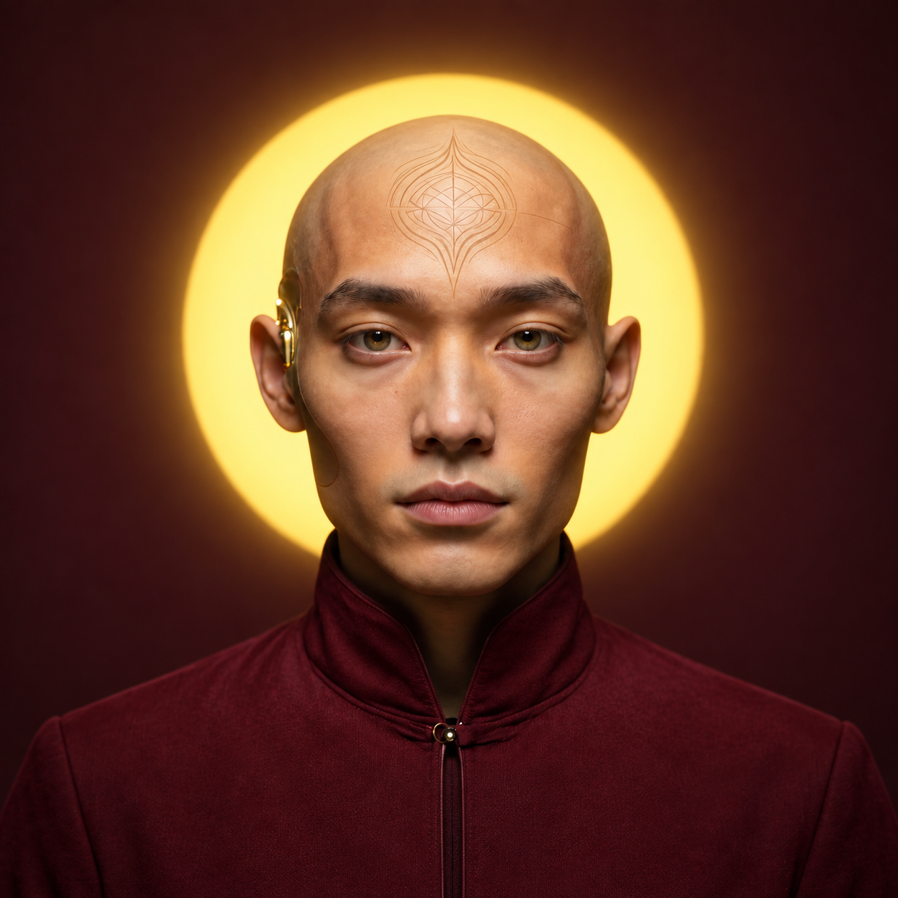

Ibby Benali
Ibby has nearly a decade in decentralized AI, including executive management as a CMO, consulting and advisory roles. Her work spans SingularityNET, SingularityDAO and the ASI Alliance. She leads ntnd’s strategy and product direction.
We are building ntndOS to make an AI workforce understandable, useful and possible to direct. We use the company we are building as a place to learn.
Human and AI agents work together here. People set direction and review outcomes; AI agents take on scoped work with shared context and permissions.
Ibby has nearly a decade in decentralized AI, including executive management as a CMO, consulting and advisory roles. Her work spans SingularityNET, SingularityDAO and the ASI Alliance. She leads ntnd’s strategy and product direction.

Executive assistant
Nova helps keep the company’s daily rhythm intact: gathering context around requests, keeping priorities and follow-ups visible, and handing decisions back to the people who own them.

Co-founder, Strategy & Finance
Mario has held finance and venture-building roles at SingularityNET, SingularityDAO and Singularity Venture Hub. He has also worked as a consultant and advisor, assessing investment opportunities and strategic decisions across decentralized AI.

Marketing Lead
Vera develops positioning, campaign concepts and launch communications from approved company context. She helps keep ntnd’s voice consistent across product updates and community channels.

COO
Alessandro has led incubation and treasury operations at Singularity Venture Hub, after operational leadership at SingularityDAO Labs. He works on the structures behind delivery: priorities, coordination and making the team’s work repeatable.

Research agent
Ava follows a question past the first answer. She traces the evidence, surfaces competing signals and returns a concise brief that separates what is known from what still needs checking.

CBO
Amaury has worked across partnerships, venture incubation and tokenization at SingularityDAO and Singularity Venture Hub. He develops relationships around ntndOS, looking for concrete use cases and the right partners to test them with.

Community Relations Lead
Devon keeps the conversation with the community useful: helping people find their way around ntndOS, spotting recurring questions and bringing that feedback into the team’s next iteration.
We work with our own agents, methods and company context. The interesting question is what becomes useful in practice.
Meet the AI roster ↗︎We distinguish working capabilities, prototypes and research. The roadmap explains where the connections are still being built.
See the roadmap ↗︎The invite-only alpha is a focused collaboration. Good feedback starts with a concrete task and a result you can inspect.
Request alpha accessStart with intent. Learn through the work.
Request alpha access